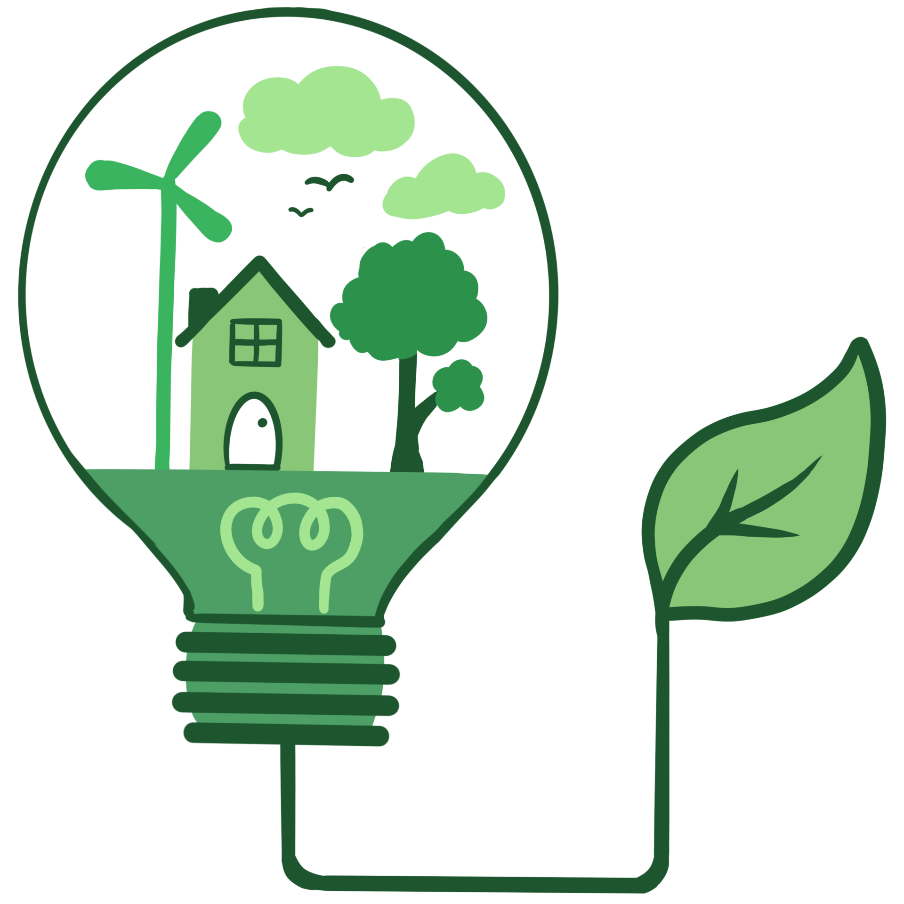
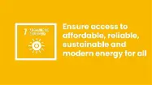

Home Energy Usage In Ireland
A webpage created to display facts and sources on the Home energy usage in Ireland by people.

Welcome To Our Website
This website talks about the Energy Usage - In Home In Ireland - Our aim is to breakdown big articles and make the resources available in place ...Here. We hope to bring you ease as you learn more about energy usage. This webpage is for educational purposes only and created by College students for the purpose of an assessment.
Our Values
- Factual Information
- User Satisfaction
- Quality of work
What is SDG 7
Sustainable Development Goal 7 is one of the 17 goals established by the United Nations in 2015 to promote global sustainable development. Its main objective is to guarantee universal access to modern energy services, which is essential for human well being, economic development and reduce poverty.
SDG 7 Further information